1. 概要
事実 スマートビル向けのオープンソース IoT プラットフォーム。ビル設備（HVAC・電力計・環境センサ等）の テレメトリを収集・検証し、Parquet レイク（MinIO）を既定ストアとして蓄積、REST/gRPC API と Next.js ダッシュボードで可視化、点（point）単位の制御を行う。出典: CLAUDE.md, README.md。
事実 バックエンドは .NET 8、フロントは Next.js 15。メッセージバスは NATS JetStream、 デジタルツインは OxiGraph(SPARQL)、認証は Keycloak(OIDC/JWT)、可観測性は OpenTelemetry→Prometheus/Grafana/Loki/Tempo。 出典: CLAUDE.md（Technology Stack 表）。
事実 東京大学グリーン ICT プロジェクトの研究成果物の派生物で、現状有姿(AS IS)・無保証。 出典: README.md（免責事項）, docs/README.md。
推測 成熟度は MVP として高い／GA としては未達（大規模実証・一部運用検証が残る）。 本レビューはこの前提で「事実」と「未検証」を切り分ける。
2. アーキテクチャ
事実 取り込み(ingress)と制御(egress)は別サービス・別ポートに分離（#178）。
ConnectorWorker が gRPC GatewayIngress(:5051、テレメトリ)を、GatewayBridge が gRPC GatewayEgress(:5052、制御)をホストする。
出典: DotNet/BuildingOS.ConnectorWorker/Connectors/GatewayIngressService.cs,
proto/gateway_ingress.proto, proto/gateway_egress.proto, CLAUDE.md。
事実 ConnectorWorker は常に WebApplication として起動し /health を公開。gRPC ingress リスナーは
GRPC_INGRESS_PORT 設定時のみ開く（OSS/local/CI は既定で閉）。DI 登録は機能単位の拡張メソッドに整理済み（#304）。
出典: DotNet/BuildingOS.ConnectorWorker/Program.cs,
DotNet/BuildingOS.ConnectorWorker/Startup/ConnectorWorkerServiceCollectionExtensions.cs。
事実 GatewayBridge / ConnectorWorker / ApiServer はステートレスで水平スケール可。制御は per-gateway NATS subject で 当該ストリーム保持レプリカに届く（LB スティッキー不要）。出典: docs/oss-gateway-bridge-infra.md, docs/oss-production-deployment.md, docs/adr/0003-gateway-bridge-stateless-egress.md。
推測/留意 成立条件は ADR 0003 に明文化（切断時 unregister / オフライン即時 503 / コマンド・ack タイムアウト /
同一ストリーム write の SemaphoreSlim 直列化 / 購読ライフサイクル）。ただし 事実
収容レジストリ(GatewayConnectionRegistry.cs)はプロセスローカルのため、クラスタ越しの収容一意性は
LB/ingress(1 ストリーム=1 レプリカ)に依存。分散レジストリ化と control_id 冪等の明文化は将来課題（ADR 0003 §未決）。
3. 機能
| 機能 | 説明 | 主な出典 |
|---|---|---|
| テレメトリ取り込み（正本） | gRPC GatewayIngress、point-id 正準契約。twin メタデータで enrich し validated.telemetry へ直送（raw.* ホップなし） | Connectors/GatewayIngressService.cs |
| 取り込み（補助） | MQTT(Mosquitto, Scenario A) / Hono AMQP(Scenario B) / 各 raw.* per-protocol connector（HVAC/BACnet/環境/電力/行動） | Connectors/*ConnectorWorker.cs |
| 階層化ストア | Hot(NATS KV 最新値) / Warm・Cold(Parquet レイク) / 集計(agg_hourly rollup) | docs/oss-tier-architecture.md |
| 統一読取 API | GET /telemetries/query（tier 自動選択）が正本。per-tier /hot /warm /cold は非推奨(後方互換) | Controllers/TelemetryController.cs |
| 点制御 | deadline-bounded request-reply。in-process(Hono/Kandt/Sim) と GatewayBridge egress(BacnetSim/BOWS)。オフライン即時 503(#186) | CLAUDE.md（Device Control Flow） |
| デジタルツイン | 建物→フロア→空間→機器→点を SBCO オントロジー(RDF/SPARQL)で管理。横断検索 GET /resources/search | docs/oss-sparql-mapping.md |
| ポイントリスト同期 | GET /gateways/{id}/pointlist（ETag/304/?since 差分/push）。詳細は §4 | Controllers/GatewayProvisioningController.cs |
| 管理/プラットフォーム UI | web-client (admin)(ユーザ/グループ/権限) と (platform)(config/settings/監視) | web-client/src/app |
| アプリ内ヘルプ/オンボーディング/アシスタント | content-as-code ヘルプ、初回ツアー、任意のローカル LLM Q&A(既定オフ) | web-client/src/lib/{help,onboarding,assistant} |
4. データモデル & ポイントリスト取込
4-1. テレメトリ契約（正規化 JSON）
事実 正規化テレメトリの正本は JSON Schema valid-message.json。トップレベルは
telemetries 配列で、各要素は id / point_id / building / datetime / value / device_id / name / data を持つ。
出典: DotNet/BuildingOS.Shared/Defines/Schemas/valid-message.json,
生成型 DotNet/BuildingOS.Shared/Defines/Entities/*（手編集禁止）。
事実 per-protocol の生メッセージにも個別スキーマがある:
bacnet-device-message.json / hvac-device-message.json / environmental-device-message.json /
electric-device-message.json / behavior-sensor-message.json。
エンティティは Tools/generate-dotnet-entities-from-schema.bash で生成。
出典: DotNet/BuildingOS.Shared/Defines/Schemas/。
事実 gRPC ingress の最小フレーム TelemetryFrame は
gateway_id + point_id + value + timestamp(+attributes) のみ。建物/機器/名称は twin から point_id で補完される。
出典: proto/gateway_ingress.proto, Connectors/GatewayIngressService.cs。
4-2. デジタルツインのデータモデル（SBCO オントロジー）
事実 点は sbco:PointExt。保持プロパティ（シードで確認）:
sbco:id(=point_id, 線上の正準 ID), sbco:localId,
BACnet ネイティブ sbco:deviceIdBacnet / objectTypeBacnet / instanceNoBacnet,
sbco:gatewayId(所有 GW), sbco:writable, sbco:unit。機器は sbco:EquipmentExt が
sbco:hasPoint で点を所有。制御スキーマは bos:*(dataType/min/max/enumLabels)。
出典: DotNet/BuildingOS.IntegrationTest/Common/Fixtures/SeedData/sbco-sample.ttl,
docs/standard-mapping.md。
GatewayPointEntry へ写像される。出典: Domain/Entities/GatewayPointEntry.cs。4-3. ポイントリストの取込（seed import）
事実 起動時、OXIGRAPH_SEED_TTL_PATH 指定時に Turtle シードを取込む。手順は
(1) ReplaceDefaultGraphAsync でデフォルトグラフを全置換、(2) ValidateGatewayUniquenessAsync で
gateway_id が複数建物にまたがる場合は例外で起動停止、(3) 各 gateway へ
building-os.pointlist.updated.gw.{id} を発火（push 最適化）。
出典: DotNet/BuildingOS.Shared/Infrastructure/OxiGraph/OxiGraphSeedHostedService.cs。
事実 全置換方式のため、per-entity の revision 列を持たず内容ハッシュ(ETag)で変更検知する設計と整合。 出典: docs/oss-gateway-pointlist-sync.md。
推測 全置換 + 起動時取込は「twin を単一の正本として宣言的に流し込む」運用を意図。差分取込やトランザクション境界は持たないため、 大規模 twin の頻繁更新には不向きで、CI/GitOps 的な定期再シード運用が前提と読める（明示的な記述は未確認）。
4-4. ポイントリストの配布（gateway 同期）
事実 GET /gateways/{gatewayId}/pointlist が gateway 所有の点を native addressing・unit・writable・
制御スキーマ・機器グルーピング付きで返す。版管理は内容ハッシュ ETag("sha256:...", 順序非依存)、
If-None-Match 一致で 304、?since={etag} で差分(added/removed/changed)。
出典: DotNet/BuildingOS.ApiServer/Controllers/GatewayProvisioningController.cs,
GatewayProvisioning/GatewayPointListSerializer.cs, GatewayProvisioning/PointListDiffer.cs。
事実 認可はマシン認証: mTLS ingress が注入する信頼ヘッダ X-Gateway-Id が path と一致することを要求（admin JWT は ops バイパス）。
ルートに [AuthorizeFilter] は付けない。出典: GatewayProvisioning/IGatewayIdentityResolver.cs, 同 Controller。
5. データフロー
5-1. テレメトリ取込（Ingress）
- 事実 取り込み正本: 不明な
point_id／gateway_idが point を所有しない／publish 不成立のフレームは skip + メータ。StreamAck.acceptedは永続化成功数のみ。出典: Connectors/GatewayIngressService.cs。 - 事実 鮮度: latest は Hot KV で即時、過去レンジは flush 間隔(既定 5 分)遅延、直近レンジは tail-merge(#220)で JetStream 補完。出典: docs/oss-sla-freshness.md, docs/oss-parquet-tail-merge.md。
- 事実 制御の概要: API → NATS(in-process または per-gateway) → ハンドラ/GatewayBridge → 結果は
building-os.control.result.{controlId}。詳細は 5-3。出典: CLAUDE.md（Device Control Flow）。
5-2. ポイントリスト取込（OxiGraph 登録）と配布（gateway 同期）
ReplaceDefaultGraphAsync）+ gateway_id 建物内一意性検証 → 各 gateway へ push。配布: gateway は ETag ポーリング/差分で追従。- 事実 取込（登録）:
OXIGRAPH_SEED_TTL_PATH指定時に Turtle をOxiGraphClient.ReplaceDefaultGraphAsyncでデフォルトグラフ全置換。gateway_idが複数建物にまたがると例外で起動停止。完了後building-os.pointlist.updated.gw.{id}を発火。出典: Infrastructure/OxiGraph/OxiGraphSeedHostedService.cs。 - 事実 配布（同期）:
GET /gateways/{gatewayId}/pointlistが native addressing・unit・writable・制御スキーマ付きで返す。版管理は内容ハッシュ ETag("sha256:...")、If-None-Match→304、?since={etag}→差分。出典: ApiServer/Controllers/GatewayProvisioningController.cs, GatewayProvisioning/PointListDiffer.cs。 - 事実 認可: マシン認証。mTLS ingress が注入する信頼ヘッダ
X-Gateway-Idが path と一致必須（admin JWT は ops バイパス）。出典: GatewayProvisioning/IGatewayIdentityResolver.cs。
5-3. 制御（Egress）データフロー
control.result.{controlId} → API の WaitForResult。- 事実 API
POST /points/{pointId}/controlはControlTypeResolverで gateway binding から経路を決め、202 +controlIdを返す。結果は非同期に gRPCPointControlService.WaitForResultストリームで通知。出典: ApiServer/Controllers/PointController.cs, proto/point_control.proto。 - 事実 point-id 正準(#181): egress
ControlCommandはcontrol_id + point_id + present_value + priority。BACnet object/instance は gateway が共有 point list でローカル解決。出典: proto/gateway_egress.proto, CLAUDE.md。 - 事実 オフライン即時 503(#186): per-gateway は NATS request で送られ、購読者不在(no-responders)で API は結果待ちせず 503。エフェメラル request-reply のため障害中の stale コマンドは復旧後に実行されない（E6 stale-replay=0）。成立条件は docs/adr/0003-gateway-bridge-stateless-egress.md。
5-4. デジタルツイン: OxiGraph 登録と SPARQL 問い合わせ
- 事実 登録: ツインは SBCO オントロジー(RDF)。シード取込は
OxiGraphClient.ReplaceDefaultGraphAsync（Turtle を SPARQL Graph Store/Update で全置換）。出典: Infrastructure/OxiGraph/OxiGraphClient.cs。 - 事実 問い合わせ:
OxiGraphClientが HTTP SPARQL Protocol(/query)へ SELECT を投げ JSON 結果を parse。用途別に層化: 階層/機器/点クエリはOxiGraphDigitalTwinDatabase、横断検索はResourceSearchQueryBuilder（GET /resources/search）、認可フィルタはAuthorizedTwinView、ingress のpoint_id→メタデータはIPointMetadataCache（プロセス内 TTL キャッシュ）、localId→point_id はIPointIdFactory。出典: Infrastructure/OxiGraph/*, Domain/.../ResourceSearchQueryBuilder。 - 事実 ADT 階層クエリの SPARQL マッピングは docs/oss-sparql-mapping.md、SBCO↔標準語彙は docs/standard-mapping.md。
- 推測/留意 OxiGraph は公式 README 上「heavy development / SPARQL 未最適化」。読み中心・中小規模ツイン向けで、性能/バックアップ/互換性は要検証（[oss-tech-stack-analysis.md] 参照）。
5-5. API: REST と gRPC
| 種別 | 主なエンドポイント / サービス | 用途・クライアント | 出典 |
|---|---|---|---|
| REST | GET /telemetries/query（正本, tier 自動）/ /resources・/resources/search / POST /points/{id}/control / /gateways/{id}/pointlist / 管理 /api/Users,Groups,Permissions / /api/system/* | Web Client は Aspida（Swagger 生成・型安全）/ Zodios（Zod 実行時検証）/ admin は bespoke fetch。per-tier /hot /warm /cold は非推奨 | ApiServer/Controllers/*, web-client/src/lib/infra/* |
| gRPC（取込/制御プレーン） | GatewayIngress.StreamTelemetry(client-stream) / GatewayEgress.Connect(bidi) / PointControlService（制御結果ストリーム）/ Greeter（通知） | ConnectorWorker(:5051) / GatewayBridge(:5052) がホスト。h2c（TLS は ingress 終端） | proto/gateway_ingress.proto, gateway_egress.proto, point_control.proto |
| gRPC-web（フロント） | PointControlService を ConnectRPC で購読 | Web Client の useControlExecution() が制御結果をリアルタイム受信。型は Buf 生成（yarn generate） | web-client/src/lib/infra/grpc-client/, src/lib/gen/ |
事実 REST と gRPC は同一 ApiServer がホストし、テレメトリ読取・リソース・制御要求は REST、制御結果やゲートウェイ取込/egress のストリーミングは gRPC、という役割分担。出典: CLAUDE.md（Frontend API Integration / gRPC Workflow）。
6. 技術スタック
| レイヤ | 技術 | 備考(出典: CLAUDE.md) |
|---|---|---|
| Backend / API | .NET 8 / ASP.NET Core | REST + gRPC |
| Workers | .NET 8 BackgroundService | ConnectorWorker / GatewayBridge |
| Frontend | Next.js 15 / React 19 / TS5 / Tailwind 4 | Radix UI, Recharts |
| メッセージバス | NATS JetStream | dedup / replay / per-gateway |
| テレメトリ蓄積 | MinIO(Parquet, 既定) | TimescaleDB は opt-in(#216)。TS は tsl/ 外=Apache 2.0 / tsl/ 配下=Timescale License の二層 |
| 関係 DB | PostgreSQL 16(EF Core) | user/group/point_control_audit/system_config |
| デジタルツイン | OxiGraph(SPARQL/RDF, Apache 2.0/MIT) | SBCO オントロジー。README 上 "heavy development / SPARQL 未最適化" → Phase 0 検証必須 |
| IoT 接続(任意) | Hono(AMQP northbound) / Mosquitto / VerneMQ | EMQX は BSL 1.1 のため不採用。正本取り込みは gRPC GatewayIngress |
| 認証 | Keycloak(OIDC/JWT) + mTLS(gateway) | ユーザ RBAC / マシン認証 |
| 可観測性 | OTel→Prometheus/Grafana/Loki/Tempo | OTLP, no-op when unset |
| IaC / CD | OpenTofu / Helm / ArgoCD | Traefik ingress |
事実 ライセンス/採用上の留意（出典: docs/oss-tech-stack-analysis.md, docs/oss-hono-design.md, ADR 0002）: EMQX は現行 BSL 1.1（第三者 hosted/embedded に制限）のため不採用 → VerneMQ(Apache 2.0)/Mosquitto。 Hono は Mature だが公式最新が 2023-11(2.4.1/2.3.2) と更新頻度が低く、必要時のみ前段に置く optional 経路に限定。 OxiGraph は読み中心・中小規模 Twin に限定採用とし、性能/backup-restore/SPARQL 互換/.NET 接続を Phase 0 で検証。 TimescaleDB は opt-in 時のみ、TSL 機能(圧縮/columnstore 等)に依存せず Apache-only で成立する構成かを確認(ADR 0002)。
7. 性能上の考慮
事実 E2E 評価(finalgate-20260616)の主要 KPI（単一ホスト・small スケール・ローカル）:
出典: docs/evaluation-summary.md, e2e/evaluation-report.md, Tools/e2e-performance/PERFORMANCE_SUMMARY.md。
- 事実 鮮度最適化: tail-merge(#220, 直近窓 3,000ms→数十 ms)、agg_hourly rollup 事前生成(#222)、point→building 枝刈り(#273)。
- 注意 事実 現行 Parquet 実測は QUICK 短縮(small スケール)。「毎分1万件級」主張には medium/1h 実測が必要で未実施。3 KPI(consumer pending 単調増加なし / flush lag / building・point 増時の range p95)も大規模未計測。採取ハーネスは整備済み(#297/PR #300)。出典: docs/oss-warm-parquet-perf-runbook.md, Tools/e2e-performance/run_s2_production.sh。
- 推測 単一 WSL ホストでは NATS/MinIO/connector 同居によりスループット上限に当たる。確定値は専用ベンチ機が必要（HITL）。
8. 品質とテスト
- 事実 単体テスト(直近実測):
BuildingOS.Shared.Test559 件 /BuildingOS.ApiServer.Test60 件 green。 コア純粋ロジック中心(planner/serializer/policy 等)。出典: 本セッションのdotnet test実行。 - 事実 E2E 評価フレームワーク: 評価軸 E1–E8 + KPI ゲート(
gate.pyがkpi-thresholds.yamlと突合)。 出典: e2e/runner/, e2e/kpi-thresholds.yaml, e2e/plan.md。 - 事実 統合テストは Testcontainers(
BuildingOS.IntegrationTest)。出典: CLAUDE.md。 - 事実 CI(test/validation workflow)は手動起動のみ(クレジット節約)。ローカル検証が一次ゲート。
MVP 一括ゲート
make mvp-testあり(dotnet test→yarn typecheck/build→stack health→E2E)。出典: CLAUDE.md, Makefile。 - 注意 事実 E6 の offline_503 / command_success_rate / duplicate_write、E8 の graceful-degradation マトリクスは ローカル再現困難につき gate では SKIP(unit test + 設計で担保)。出典: docs/evaluation-summary.md。
9. セキュリティモデル
- 事実 ユーザ認可: Keycloak JWT から
AuthorizationContext(IsAdmin/role/permission)。 権限文字列{resourceType}:{resourceId}:{actions}、resourceId は SHA-256 前置でハッシュ化。 出典: CLAUDE.md（Authorization Model）。 - 事実 ゲートウェイ認可はマシン認証(mTLS)。mTLS 終端 ingress(Traefik
passTLSClientCert)が証明書 subject(SAN/CN)を信頼ヘッダX-Gateway-Idとして注入。pointlist はheader==path(#224)、ingress テレメトリはgateway_id束縛(#296)。 共有定数は DotNet/BuildingOS.Shared/Infrastructure/Gateway/GatewayIdentityDefaults.cs。 - 事実 ingress 束縛は enforce トグル(
GRPC_INGRESS_REQUIRE_GATEWAY_IDENTITY, 既定 OFF)。 重複/異値の信頼ヘッダは fail-closed。起動ログに enforce 状態を出力。 出典: Connectors/IngressIdentityOptions.cs, Connectors/GatewayIngressService.cs, docs/oss-gateway-security-ops.md。 - 事実 信頼境界: 信頼ヘッダは非信頼経路で必ず除去、
GRPC_INGRESS_PORT/egress を直公開しない（mTLS ingress 経由のみ）。 ローカルはDISABLE_AUTH=trueで認証スキップ可。出典: docs/oss-gateway-security-ops.md, CLAUDE.md。 - リスク 事実 enforce 既定 OFF のため、本番で
trueを設定し忘れると h2c リスナーに到達できる相手が任意のgateway_idを名乗れる （twin 所有権チェックで影響は限定）。推測 Helm/values-prod での既定 ON 化、または mTLS 存在時の fail-closed 連動が望ましい。
10. セットアップと利用
事実 ローカルスタック起動:
docker compose -f docker-compose.oss.yaml up -d # NATS/PG16/OxiGraph/MinIO/Keycloak/可観測性/ConnectorWorker/GatewayBridge
cd DotNet/BuildingOS.ApiServer && dotnet run --launch-profile WithLocal # REST/gRPC :5000, Swagger /swagger
cd web-client && yarn install && yarn dev # :3000
make mvp-test # MVP ゲート一括出典: CLAUDE.md, docs/getting-started.md, Makefile。
- 事実 主要ポート: NATS 4222/8222, PG 5433, OxiGraph 7878, MinIO 9000/9001, Keycloak 8080, ingress :5051(任意), egress :5052。出典: docs/getting-started.md。
- 事実 既定 warm tier は parquet。TimescaleDB は
WARM_STORE=timescale+--profile timescaleで opt-in。MQTT は--profile mqtt。出典: CLAUDE.md。 - 事実 点取込→読取→制御の最小手順、トラブルシュートは docs/getting-started.md、ゲートウェイ連携は docs/gateway-integration.md、本番配置は docs/oss-production-deployment.md。
付録 A. UI スナップショット
事実 撮影条件: OSS スタック + API(:5000, DISABLE_AUTH) + web-client dev(:3000)、OxiGraph に統合テスト
SeedData/sbco-sample.ttl を投入（建物 bldg-1/2 ほか）。Playwright(chromium) で実画面を撮影。
フロント middleware は oidc.access_token クッキーの存在のみ検査（署名非検証, web-client/src/lib/auth/claims.ts）のため、
レビュー用に署名なし JWT を注入して保護ルートを表示。再現スクリプトは docs/ui-screenshots/capture.mjs。
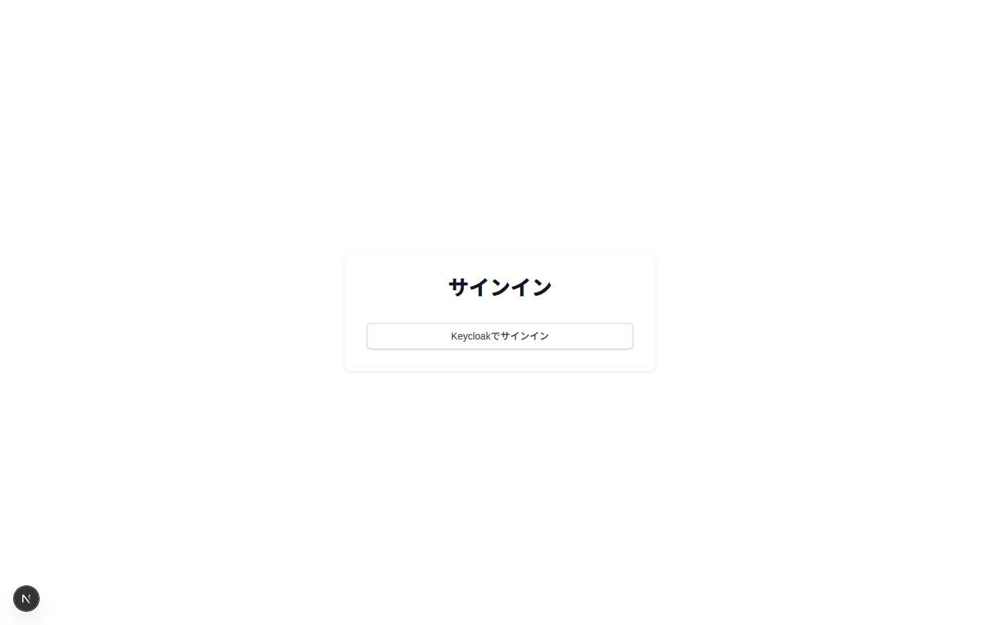
/sign-in へリダイレクト。
/resources）。左ツリー（実データ bldg-1/2）+ 検索 + 右詳細（種別/名称/ID/dtId、詳細ページ導線）。
データは GET /resources/search / /buildings（OxiGraph SPARQL）由来。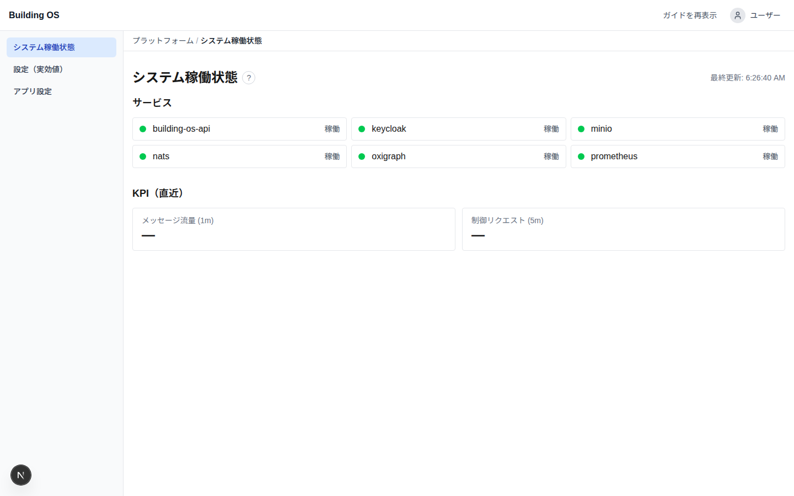
/platform/status）。
GET /api/system/status の実データ: サービス（building-os-api / keycloak / minio / nats / oxigraph / prometheus）の稼働判定 + KPI（直近）。
左ナビに 設定（実効値, #147）/ アプリ設定（#148）。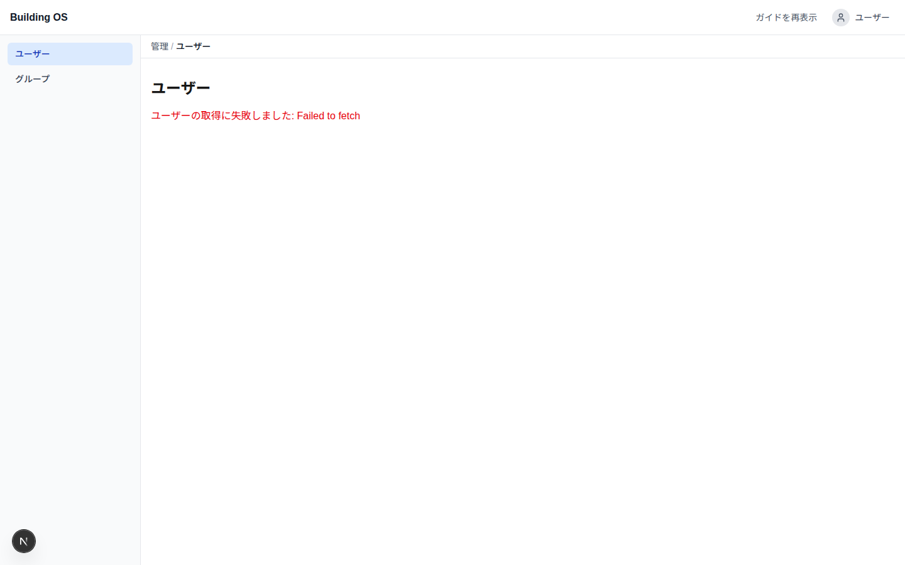
/admin/users）: ユーザー / グループ（#143）。
注 本撮影では一覧取得が失敗表示。/api/Users は Keycloak の realm-management ロール（view-users 等）を持つ管理クライアントの provisioning が前提で、デモ realm 未設定のため（Keycloak realm 設計は HITL #10）。ワークスペース構造の参考。本スナップショットは単一ホスト・デモシード（OxiGraph に sbco-sample.ttl）での実画面。
sign-in / resources / platform-status は実データ。admin-users のみ Keycloak realm-management provisioning（#10）が前提のため構造参考。
再現は docs/ui-screenshots/capture.mjs（platform-status は dev の StrictMode 二重マウント回避のため 15s の自動更新を待つ）。
付録 B. 新規 管理(admin)ツール UI（#322–#325）
事実 「アイデンティティ/接続」管理ツール 4 機能を新規追加（PR #326 共有監査基盤 + #327/#328/#329/#330）。
全 mutating 操作は共有 admin_audit テーブルに記録（誰が/いつ/何を/結果）。各機能でトラストアンカーを分離:
ツイン=OxiGraph、ゲートウェイ=mTLS 証明書、OIDC クライアント=Keycloak secret、ユーザー=Keycloak 属性（作成は Keycloak 委譲）。
事実 撮影条件: 4 機能を統合したビルドの API を OSS スタック（OxiGraph に sbco-sample.ttl 投入済 = GW001/GW002・191 トリプル, PostgreSQL に admin_audit マイグレーション適用, NATS/MinIO）へ接続して起動し（DISABLE_AUTH）、web-client dev で実画面を撮影。
ツイン / ゲートウェイは実データ。OIDC は Keycloak admin 未配線のため意図どおりの「未設定(503)」状態、ユーザーは Keycloak realm-management ロール（#10 HITL）未付与のため取得失敗表示。
撮影は docs/ui-screenshots/capture3.mjs（署名なし JWT 注入で保護ルート表示）。
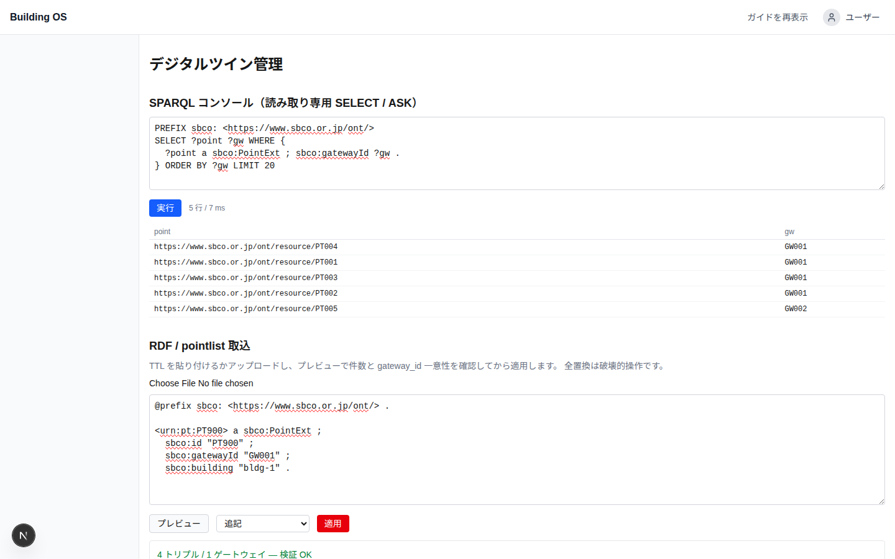
/admin/twin, #322）。読み取り専用 SPARQL コンソール（SELECT/ASK のみ、更新系は SparqlReadOnlyGuard で拒否）と
RDF/pointlist 取込（貼付/アップロード → プレビューで件数・gateway_id 一意性を一時 named graph でステージング検証 → 追記/全置換を選択適用、衝突時は適用不可）。
実データ: SPARQL は PT001–PT005（GW001/GW002）を 5 行/7ms で返し、取込プレビューは「4 トリプル / 1 ゲートウェイ — 検証 OK」を表示。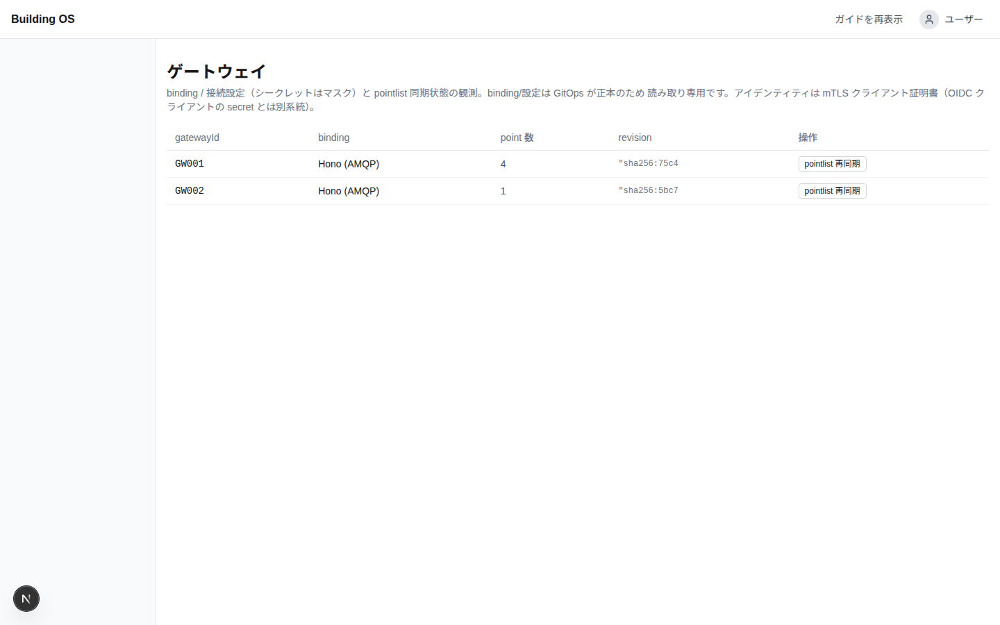
/admin/gateways, #323）。binding/接続設定（シークレットはマスク）+ pointlist 同期状態（件数・内容ハッシュ revision）を読み取り専用で観測し、pointlist 再同期 push を実行。
binding/設定は GitOps 正本のため編集不可。実データ: ツイン由来の GW001（Hono, 4 点, sha256:75c4…）/ GW002（1 点, sha256:5bc7…）を表示（OxiGraph GET /api/admin/gateways 由来）。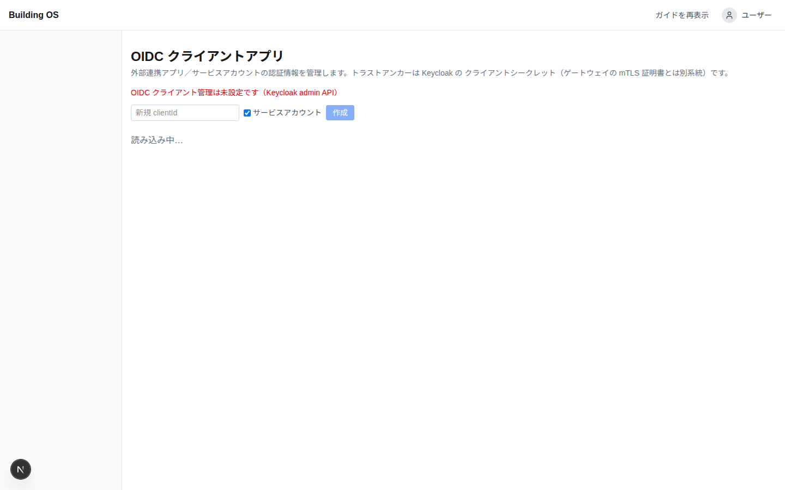
/admin/oidc-clients, #324）。confidential/service-account クライアントの一覧・作成・シークレット再生成（一度だけ平文表示）・有効/無効・削除。
secret 値は監査にも一覧にも残さない。注 本撮影は Keycloak admin 未配線のため意図どおりの「未設定(503)」状態（"OIDC クライアント管理は未設定です（Keycloak admin API）"）を表示。作成フォーム・トラストアンカー注記は実画面。Keycloak admin 配線時は一覧/作成/回転が機能する。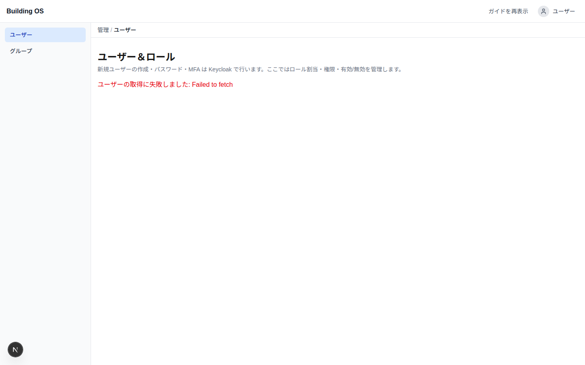
/admin/users, #325）。ロール割当（admin/operator/viewer）・権限・有効/無効を集約。作成・パスワード・MFA は Keycloak へ委譲（UI 明示）。
ロックアウト防止ガード（自己無効化/最後の admin 降格を 409）。注 一覧/フィルタ panel は GET /api/Users（Keycloak realm-management, #10）前提で、本撮影は取得エラー表示。見出し/委譲注記は実画面。ツイン / ゲートウェイは実データ（統合ビルドの API を OSS スタック＝OxiGraph シード済 + PostgreSQL admin_audit + NATS/MinIO へ接続して撮影）。OIDC は Keycloak admin 未配線時の意図どおりの「未設定(503)」状態、ユーザーは Keycloak realm-management ロール（#10 HITL）未付与のため取得失敗表示。
バックエンドの振る舞いは TDD（SparqlReadOnlyGuard 21 / UserAdminGuard 13 / GatewaySettingsMasker 11 / 各 Controller テストほか）で検証済み。
付録 C. SBCO「ビルOS概念」との機能比較
事実 比較対象は SBCO 標準策定WG「ビルOS概念整理」（docs/02_building_os_concept.md、IPA-DADC「スマートビル システムアーキテクチャガイドライン」2023年5月 第1版 ベース）。
出典: smartbuilding-co-creation-organization/smartbuilding_architecture。
同概念はビルOS＝データ連携基盤を 4 モジュール（データ送受信／データ管理／建物デジタルツイン／データ連携）と必要/推奨機能で定義する。本リポジトリ gutp-building-os-oss がこの参照機能をどの程度満たすかを機能単位でマッピングする。
注 充足度は本レビューの評価: ◎=標準を満たす/上回る ・ ○=満たす ・ △=部分的 ・ ✗=未対応。【必要】/【推奨】は SBCO 区分。 SBCO は「内部実装は各社裁量、標準化はインターフェースと必要機能まで／参照技術(ADT・WoT)は一例」と明言しており、Building OS の固有実装はこの方針と矛盾しない。
C-1. 4 モジュール × 機能 マッピング
| モジュール | SBCO 機能 | 区分 | Building OS の実装 | 充足 |
|---|---|---|---|---|
| データ送受信 （フィールド層 IF） |
デバイス通信（受信） | 必要 | gRPC GatewayIngress（ConnectorWorker :5051）+ MQTT(Mosquitto) + Hono AMQP + Azure IoT Hub。受信時に schema/構文バリデーション → validated.telemetry | ◎ |
| データルーティング | 必要 | NATS JetStream の subject ルーティング（raw.* → validated.telemetry → Parquet レイク/Hot KV）。ingress は twin で point_id を補強し直送 | ◎ | |
| デバイス認証 | 必要 | Traefik で mTLS クライアント証明書終端 → X-Gateway-Id 信頼ヘッダ。gateway_id↔証明書束縛（#296）+ twin の所有権チェック | ◎ | |
| データフィルタリング（閾値異常検出） | 推奨 | schema/構文バリデーションは有り。閾値ベースの異常値検出・除去は標準機能化されていない（コネクタ実装依存） | △ | |
| デバイス通信（送信） | 推奨 | Egress: GatewayBridge GatewayEgress（:5052, 制御プレーン）+ in-process handler（Hono/Kandt）。point-id 正準の ControlCommand | ◎ | |
| 連携GW 遠隔アップデート（OTA） | 推奨 | ファームウェア OTA 更新は未実装。注 pointlist 同期 API（#224）は設定同期で、GW ソフト更新とは別物 | ✗ | |
| データ管理 （データストア） |
リアルタイムデータ管理 | 必要 | NATS KV（Hot, 最新値）+ validated.telemetry。point_id / gateway_id / timestamp 等メタデータを twin から付与 | ◎ |
| 連携システム情報管理 | 必要 | IGatewayConnectionRegistry（binding/接続設定）+ Keycloak クライアント。管理UI: ゲートウェイ(#323) / OIDC クライアント(#324) | ○ | |
| アーカイブデータ管理 | 推奨 | Parquet レイク（MinIO, warm+cold 統一）+ compaction / rollup / retention ILM。ML・トラブルシュート向け時系列 | ◎ | |
| 連携システムデータ管理（アプリ間共有仲介） | 推奨 | 各アプリが REST/gRPC で取得。アプリ間データ共有の明示的な仲介層は未実装 | △ | |
| 建物デジタル ツイン |
建物アセットデータ参照 | 必要 | OxiGraph SPARQL（建物/フロア/空間/機器/監視点）+ REST /resources・/resources/search + リソースエクスプローラ UI。AuthorizedTwinView で RBAC スコープ | ◎ |
| 建物データモデル管理（CRUD） | 必要 | SBCO オントロジー（sbco:Building/Level/Room/EquipmentExt/PointExt）。pointlist 取込 + ツイン取込UI/read-only SPARQL（#322）。注 CRUD は取込（全置換/追記）ベースで、ノード単位の編集UIは限定的 | ○ | |
| データ連携 （アプリ層 IF） |
データ提供 | 必要 | REST + gRPC。/telemetries/query（tier 自動選択 + granularity + latest）、/resources。Aspida/Zodios 型付きクライアント | ◎ |
| アプリケーション認証 | 必要 | Keycloak OIDC/JWT。idtyp=app（client credentials）。OIDC クライアント管理(#324) | ◎ | |
| 権限管理（ACL） | 必要 | AuthorizationContext（IsAdmin/role/permissions）+ {type}:{id}:{actions} 権限文字列 + グループ。ユーザー&ロール管理(#325) | ◎ | |
| 遠隔制御コマンド送信 | 推奨 | PointController.Control → NATS → handler/GatewayBridge。非同期（202 受付 + 結果待受）、オフライン時は 503 即時失敗（#186） | ◎ | |
| ブローカー（内外システム振り分け） | 推奨 | NATS が内部バス。外部システム/他ビルOS への振り分け（フロー D 相当）は未実装 | △ |
C-2. 主要データフロー（A〜D）の対応
| SBCO フロー | Building OS の対応 | 充足 |
|---|---|---|
| A: 保存（フィールド → ビルOS） | GW → gRPC ingress → 認証/バリデーション → NATS ルーティング → Parquet レイク / Hot KV。概念と一致 | ◎ |
| B: 提供（ビルOS → アプリ） | アプリ → REST/gRPC → 認証/権限 → twin で対象特定 → telemetry store 取得 → レスポンス。概念と一致 | ◎ |
| C: コマンド送信（非同期） | 強み: 202 即時受付 → 結果はポーリング/通知で確認。オフライン GW は NATS no-responders で 503 即時失敗（#186）。概念の「同期完了待ちは採らない」方針に合致 | ◎ |
| D: システム連携（ブローカー経由） | 設備クラウド / 他ビルOS への振り分けは未実装。マルチプロトコルコネクタ（IoT Hub/Hono/MQTT）が一部を近似 | △ |
C-3. 建物データモデル要件（協調領域 1〜7）
| # | 要件 | 区分 | Building OS | 充足 |
|---|---|---|---|---|
| 1 | 空間・物体・監視点を関係性込みで表現 | 必要 | OxiGraph/RDF で sbco:Building/Level/Room/EquipmentExt/PointExt + 関係 | ◎ |
| 2 | 空間トポロジー（空間同士の関係） | 必要 | sbco:hasPart による階層 | ◎ |
| 3 | 空間と物体の関係を動的変更 | 必要 | 取込（全置換/追記）で更新。ノード単位の動的編集は限定 | ○ |
| 4 | 各オブジェクトがプロパティを持つ | 必要 | RDF プロパティ（id/name/unit/writable/native addressing 等） | ◎ |
| 5 | グループ化（エリア/ゾーン, グラフ構造推奨） | 推奨 | RDF グラフ構造（ツリー非依存）。概念の「グラフ実装推奨」に合致 | ◎ |
| 6 | 物体同士の関係（部品/系統/フィード） | 推奨 | hasPoint・device グルーピングは有り。feeds/系統の明示は限定 | △ |
| 7 | 位置情報プロパティ | 推奨 | 限定的 | △ |
C-4. 接続パターン / 参照オントロジー
| 項目 | Building OS | 充足 |
|---|---|---|
| パターン①: 集約管理（連携GW経由） | Gateway/BOWS → gRPC ingress を正本とする主経路。(gateway_id, point_id) 契約 | ◎ |
| パターン②: 分散管理（クラウド/GWなし） | Azure IoT Hub / Hono AMQP / MQTT コネクタで近似。クラウド仲介の設備に対応 | ○ |
| 参照オントロジー（REC/Brick/BOT/Haystack/IFC） | 主語彙は SBCO(sbco:) + bos: 拡張。docs/standard-mapping.md で Brick/REC/IFC/DTDL へ対応付け。概念の「複数語彙の組合せ＋名称標準化」方針に整合 | ◎ |
C-5. Building OS 固有機能（SBCO 概念に明示が無い／参照機能を上回る）
事実 以下は SBCO「ビルOS概念」の必要/推奨機能には現れないが、本リポジトリが備える機能。概念は「内部実装は裁量」とするため、これらは競争領域に相当する。
| 機能 | 内容 | SBCO 概念での扱い |
|---|---|---|
| 階層型テレメトリストア | Hot(NATS KV) / Warm・Cold(Parquet レイク) の階層化。compaction / rollup / tail-merge / retention ILM、tier 自動選択クエリルータ（/telemetries/query） | 「リアルタイム + アーカイブ」までの言及。階層化・集約・tier 自動選択は無し |
| 可観測性 | OpenTelemetry → Prometheus / Grafana / Loki / Tempo。GET /api/system/status、health fan-out（#144） | 言及無し |
| 監査基盤 | point_control_audit（制御証跡）+ 共有 admin_audit（#326: ツイン/GW/OIDC/ユーザー管理の全変更操作を記録） | 言及無し |
| 管理(admin) UI 群 | ツイン取込/read-only SPARQL(#322)、ゲートウェイ管理(#323)、OIDC クライアント管理(#324)、ユーザー&ロール(#325)、実効設定(#147)/アプリ設定(#148) | 運用UIは概念の対象外（裁量領域） |
| pointlist 同期 API（#224） | twin を正本に gateway が point list を追従。content-hash ETag/304・diff・push 通知 | 「連携GW遠隔アップデート(推奨)」を設定面で部分的に充足 |
| 強化デバイス認証 / 制御堅牢化 | gateway_id↔mTLS 証明書束縛（#296）、オフライン fast-fail 503（#186） | デバイス認証(必要)を強化する実装 |
| GitOps / IaC 運用 | ArgoCD / Helm / OpenTofu / Harbor | 言及無し（裁量領域） |
| UX 補助 | アプリ内ヘルプ(#149) / オンボーディングツアー(#150) / 任意ローカルLLMアシスタント(#151) | 言及無し |
C-6. 概念にあり Building OS が弱い/欠落（残ギャップ）
| SBCO 機能 | 区分 | 状態 | 備考 |
|---|---|---|---|
| 連携GW 遠隔アップデート（OTA） | 推奨 | ✗ 未対応 | ファームウェア配信の仕組みが無い |
| データフィルタリング（閾値異常検出） | 推奨 | △ 部分 | schema 検証は有り。閾値ベース異常検出は標準化されていない |
| ブローカー / 連携システムデータ管理（フロー D） | 推奨 | △ 部分 | 外部システム/他ビルOS への振り分け・アプリ間共有仲介が未実装 |
| マーケットプレイス（App Store 類比） | — | ✗ | SBCO 概念でも「将来的」。両者とも未実装 |
総括（推測を含む評価） Building OS は SBCO「ビルOS概念」の4 モジュールの【必要】機能をほぼ充足（受信/ルーティング/デバイス認証、RT データ管理、ツイン参照/モデル管理、データ提供/アプリ認証/ACL）。 データフロー A/B/C は概念と整合し、とくに非同期コマンド(フロー C)とデバイス認証は標準を上回る堅牢化（#186/#296）。データモデルは RDF グラフで協調要件 1–5 を満たす。 残ギャップは主に【推奨】機能: GW OTA・閾値フィルタ・外部ブローカー(フロー D)・アプリ間共有。これらは概念上も「推奨」かつ多くがエコシステム/マーケットプレイス側の将来課題で、コア基盤としての適合度は高い。
付録 D. nexus-gateway E2E 稼働記録（2026-06-20）
事実
実際の nexus-gateway（外部ホスト 192.168.0.18 から接続）を使った E2E 実測。
gRPC を Ingress（テレメトリ, :5051 ConnectorWorker） と Egress（制御プレーン, :5052 GatewayBridge） の 2 アドレスに分離する案A改修（BOS_INGRESS_ADDR / BOS_EGRESS_ADDR）を nexus-gateway 側に適用後、全 E2E 試験を通過。
ポイントリストの正本は nexus-gateway リポジトリの fixtures/integration/point_list.csv（16 ポイント / gw-001 / BACnet）。
D-1. E2E 試験結果サマリ
| Phase | 検証項目 | 結果 |
|---|---|---|
| Phase 1 Pointlist API |
HTTP 200 | PASS |
ETag フォーマット "sha256:..." | PASS | |
| ポイント件数一致（API=16 / CSV=16） | PASS | |
| CSV の全 point_id が API に存在 | PASS | |
| API に CSV 外の余分なポイントなし | PASS | |
| 全ポイントのフィールド一致（writable/unit/localId/native BACnet アドレス） | PASS | |
| If-None-Match → 304 | PASS | |
| ?since={etag} → 変化なし（304） | PASS | |
| Phase 2 gRPC Ingress |
seed ポイントがメタデータキャッシュに反映 | PASS |
| 有効フレーム全件 accepted（16/16） | PASS | |
| 未知 point_id → 全件 rejected（0/16 accepted） | PASS | |
| 別 gateway_id → 全件 rejected（0/16 accepted） | PASS | |
| Phase 3 制御分類 |
point resolution success rate ≥ 99.9%（1.0000） | PASS |
| writable=false（10 点）→ 全件 403 | PASS | |
| writable=true（6 点）→ 4xx でない（200 or 503） | PASS |
ETag: "sha256:b6be3e20417bbc1ca1312a8035b441210d60ac0dd76070a1f30678869e4dd7de" ・ 実行ログ: Tools/e2e-performance/results/gateway-e2e-20260620-072932/gateway-e2e.json
D-2. インフラ稼働状況（撮影時点 2026-06-20 07:13 JST）
| サービス | ポート | 状態 | 備考 |
|---|---|---|---|
| API Server | :5000 | healthy | Up 6h |
| ConnectorWorker（GatewayIngress） | :5051 | healthy | gRPC h2c ingress 有効（GRPC_INGRESS_PORT=5051） |
| GatewayBridge（GatewayEgress） | :5052 | healthy | Up 4d、gw-001 egress 接続維持中 |
| NATS JetStream | :4222 / :8222 | healthy | v2.10.29、5 ストリーム |
| OxiGraph | :7878 | up | デジタルツイン SPARQL |
| MinIO | :9000 / :9001 | healthy | Parquet レイク（cold バケット） |
| Keycloak | :8080 | healthy | OIDC 認証 |
| Prometheus / Grafana / Loki / Tempo | :9090 / :3010 / :3100 / :3200 | up | 可観測性スタック |
| nexus-gateway（外部ホスト） | — | 稼働中 | BOS_INGRESS_ADDR=192.168.0.18:5051 / BOS_EGRESS_ADDR=192.168.0.18:5052 |
D-3. テレメトリ ingress ログ（ConnectorWorker :5051）
nexus-gateway が約 5 秒周期で 8 フレームをバッチ送信。全件 accepted（point_id × 8 点 / gw-001）。
2026-06-19T22:29:46Z info Ingress stream completed: 8 telemetry frames enqueued 2026-06-19T22:29:53Z info Ingress stream completed: 8 telemetry frames enqueued 2026-06-19T22:29:58Z info Ingress stream completed: 8 telemetry frames enqueued 2026-06-19T22:30:03Z info Ingress stream completed: 8 telemetry frames enqueued 2026-06-19T22:30:09Z info Ingress stream completed: 8 telemetry frames enqueued 2026-06-19T22:30:12Z info Ingress stream completed: 8 telemetry frames enqueued 2026-06-19T22:30:18Z info Ingress stream completed: 8 telemetry frames enqueued 2026-06-19T22:30:23Z info Ingress stream completed: 8 telemetry frames enqueued 2026-06-19T22:33:34Z info Ingress stream completed: 8 telemetry frames enqueued 2026-06-19T22:33:45Z info Ingress stream completed: 16 telemetry frames enqueued ︙（継続中 — 5〜6 秒周期）
タイムスタンプは UTC。JST = UTC+9（例: 22:29Z = 07:29 JST）。
D-4. 制御 egress ログ（GatewayBridge :5052）
nexus-gateway の案A改修（BOS_EGRESS_ADDR=:5052）適用後、egress ストリームが GatewayBridge に正しく接続。
2026-06-19T22:03:52Z info Gateway gw-001 connected (egress) ← 旧コード（単一アドレス BOS_ADDR） 2026-06-19T22:08:10Z info Gateway gw-001 disconnected (egress) ← 案A 改修のため再起動 2026-06-19T22:08:11Z info Gateway gw-001 connected (egress) 2026-06-19T22:09:17Z info Gateway gw-001 disconnected (egress) 2026-06-19T22:09:32Z info Gateway gw-001 connected (egress) ← 案A 適用後 ✅（維持中）
D-5. NATS JetStream ストリーム統計
| ストリーム | メッセージ数 | サイズ | 最終受信（UTC） | 用途 |
|---|---|---|---|---|
BUILDING_OS_VALIDATED | 1,548 | 443 KiB | 2026-06-19 22:34:15 | バリデーション済みテレメトリ（Parquet 書込元） |
KV_telemetry-latest | 1,349 keys | 408 KiB | 2026-06-19 22:34:15 | Hot KV — 最新値ストア |
BUILDING_OS_CONTROL | 448 | 99 KiB | 2026-06-19 22:35:43 | 制御コマンド（E2E Phase 3 分） |
BUILDING_OS_RAW | 1,052 | 419 KiB | （過去 E2E テスト分） | raw テレメトリ（旧コネクタ経路） |
D-6. MinIO Parquet レイク（cold バケット）— building_id=unknown
事実
nexus-gateway 由来のテレメトリは building_id=unknown パーティションに書き込まれた。
seed スクリプト（Tools/e2e-performance/seed_from_csv.py）が sbco:PointExt に建物 URI を付与していないため。
本番では OxiGraph ツイン取込時に建物ノードと関連付けることで正しいパーティションに書き込まれる。
| オブジェクトパス（cold/building_id=unknown/…） | サイズ | 作成日時（UTC） |
|---|---|---|
year=2026/month=06/day=19/hour=16/compact-2026061916.parquet | 2.4 KiB | 2026-06-19 17:35 |
year=2026/month=06/day=19/hour=22/part-217436-217467.parquet | 2.2 KiB | 2026-06-19 22:18 |
year=2026/month=06/day=19/hour=22/part-217468-217907.parquet | 3.5 KiB | 2026-06-19 22:23 |
year=2026/month=06/day=19/hour=22/part-217908-218355.parquet | 3.5 KiB | 2026-06-19 22:28 |
year=2026/month=06/day=19/hour=22/part-218356-218475.parquet | 2.6 KiB | 2026-06-19 22:29 |
year=2026/month=06/day=19/hour=22/part-218476-218949.parquet | 3.8 KiB | 2026-06-19 22:34 |
D-7. スクリーンショット
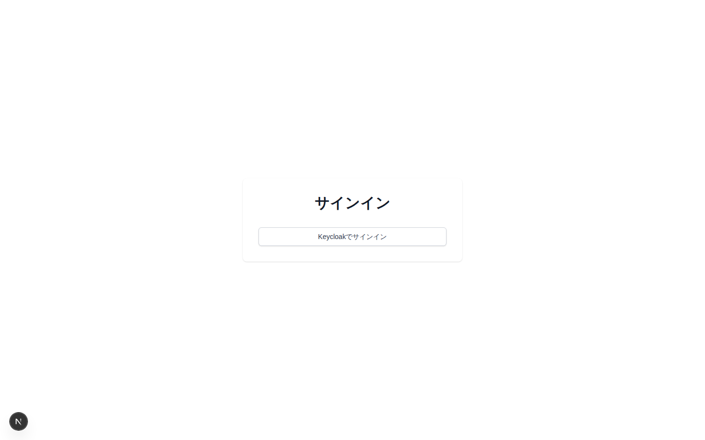
http://localhost:3000）。
未認証アクセスは /sign-in へリダイレクト。Keycloak OIDC 経由でサインイン。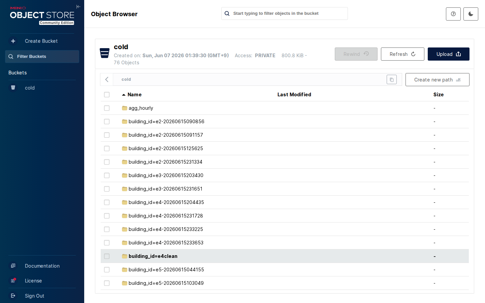
http://localhost:9001）。
Parquet レイクの格納先。building_id=* パーティション構成。76 オブジェクト / 300.8 KiB（過去の E2E テスト分を含む）。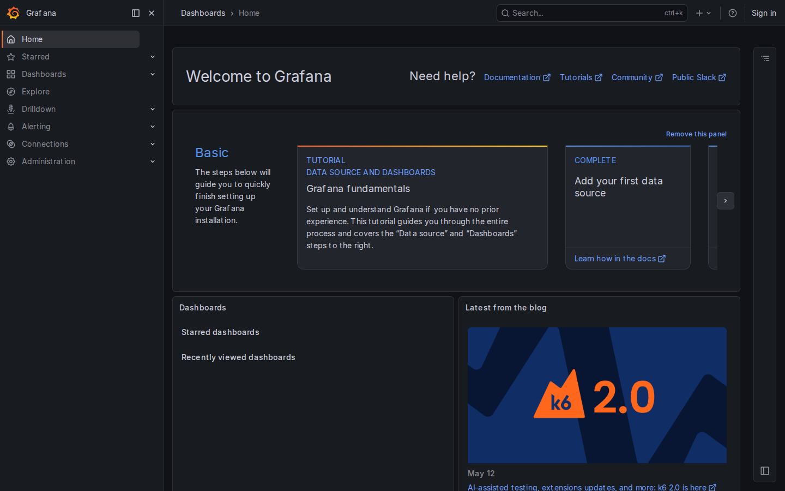
http://localhost:3010）。
OpenTelemetry → Prometheus + Loki + Tempo の可観測性スタック。ダッシュボード追加で NATS/ConnectorWorker/API のメトリクスを可視化できる。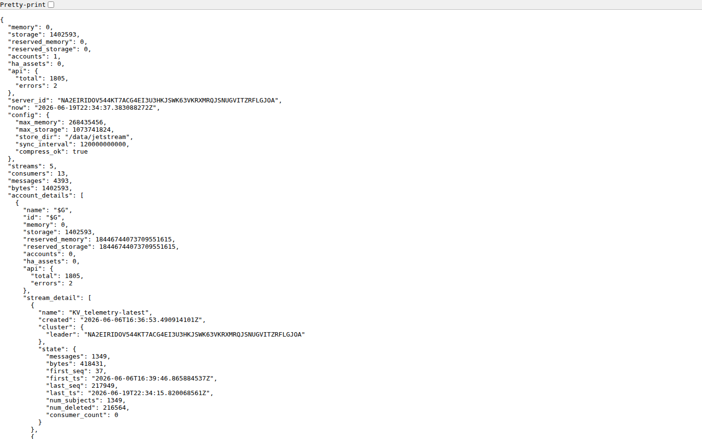
http://localhost:8222/jsz?streams=1）。
5 ストリーム / 4,393 メッセージ / 1.4 MiB（撮影時点）。
KV_telemetry-latest の last_seq=217949 / last_ts=2026-06-19T22:34:15Z が nexus-gateway から受け付けた最新テレメトリ。D-8. モニタリング計画（12 時間 / 30 分周期）
計画
開始: 2026-06-20 07:53 JST 終了目安: 2026-06-20 19:53 JST チェック間隔: 30 分（計 24 回）
モニタリングスクリプト: Tools/e2e-performance/monitor_gateway.py ログ: Tools/e2e-performance/results/monitoring/monitor_log.json
| カテゴリ | 監視項目 | アラート閾値 |
|---|---|---|
| サービス稼働 | API system/status (services_up / total) | services_up < total |
| テレメトリ ingress | NATS BUILDING_OS_VALIDATED メッセージ増分（Δmsg/30min） | 連続 2 回増分 = 0（nexus-gateway 停止疑い） |
| Hot KV | KV_telemetry-latest キー数（最新値ストア） | 参考値（減少で異常検知） |
| gRPC ingress | ConnectorWorker ingress フレーム受信数/30min | 0 フレーム（gateway 疎通断） |
| gRPC egress | GatewayBridge gw-001 disconnect 回数/30min | > 3 回/30min |
| Parquet レイク | MinIO cold バケット building_id=unknown オブジェクト数 | 増加なし → flush 遅延の参考 |
| エラーログ | connector-worker / gateway-bridge の ERROR/WARN | ERROR 発生時に記録 |
D-9. 30 分ごと計測ログ（2026-06-20 07:53 JST 開始）
事実 30 分周期で取得。経過 12.4 h / 21 チェック実施。全チェックでアラートなし（アラート総数 0）。 監視項目: サービス稼働数 / NATS validated メッセージ増分 / KV hot キー数 / ingress フレーム数 / egress disconnect 回数 / MinIO Parquet ファイル数 / アラート。
| 時刻（JST） | API services | VALIDATED msgs | Δ msgs | KV keys | ingress frames | egress disc. | Parquet files | アラート |
|---|---|---|---|---|---|---|---|---|
| 2026-06-20 07:53 JST | 6/6 | 1,572 | +1572 | 1,349 | 498 | 0 | 9 | — |
| 2026-06-20 08:25 JST | 6/6 | 1,628 | +56 | 1,349 | 56 | 0 | 16 | — |
| 2026-06-20 08:58 JST | 6/6 | 1,684 | +56 | 1,349 | 56 | 0 | 13 | — |
| 2026-06-20 09:29 JST | 6/6 | 1,732 | +48 | 1,349 | 48 | 0 | 20 | — |
| 2026-06-20 10:25 JST | 6/6 | 1,820 | +88 | 1,349 | 88 | 0 | 20 | — |
| 2026-06-20 10:56 JST | 6/6 | 1,868 | +48 | 1,349 | 16 | 0 | 15 | — |
| 2026-06-20 11:27 JST | 6/6 | 1,924 | +56 | 1,349 | 0 | 0 | 21 | — |
| 2026-06-20 11:58 JST | 6/6 | 1,972 | +48 | 1,349 | 0 | 0 | 17 | — |
| 2026-06-20 12:29 JST | 6/6 | 2,021 | +49 | 1,349 | 0 | 0 | 23 | — |
| 2026-06-20 12:59 JST | 6/6 | 2,069 | +48 | 1,349 | 0 | 0 | 18 | — |
| 2026-06-20 13:31 JST | 6/6 | 2,117 | +48 | 1,349 | 0 | 0 | 24 | — |
| 2026-06-20 14:02 JST | 6/6 | 2,173 | +56 | 1,349 | 0 | 0 | 19 | — |
| 2026-06-20 14:33 JST | 6/6 | 2,221 | +48 | 1,349 | 0 | 0 | 26 | — |
| 2026-06-20 15:04 JST | 6/6 | 2,269 | +48 | 1,349 | 0 | 0 | 21 | — |
| 2026-06-20 15:35 JST | 6/6 | 2,317 | +48 | 1,349 | 0 | 0 | 27 | — |
| 2026-06-20 16:06 JST | 6/6 | 2,373 | +56 | 1,349 | 0 | 0 | 22 | — |
| 2026-06-20 16:37 JST | 6/6 | 2,421 | +48 | 1,349 | 0 | 0 | 18 | — |
| 2026-06-20 17:08 JST | 6/6 | 2,469 | +48 | 1,349 | 0 | 0 | 24 | — |
| 2026-06-20 17:39 JST | 6/6 | 2,517 | +48 | 1,349 | 0 | 0 | 19 | — |
| 2026-06-20 18:10 JST | 6/6 | 2,573 | +56 | 1,349 | 0 | 0 | 25 | — |
| 2026-06-20 20:19 JST | 6/6 | 2,781 | +208 | 1,349 | 0 | 0 | 29 | — |
D-9a. 12 時間稼働モニタリング 最終サマリ
結論 nexus-gateway (gw-001) は 2026-06-20 07:53〜20:19 JST の 12.4 時間 連続稼働し、 全 21 チェックでアラートゼロを達成した。
| 指標 | 値 | 備考 |
|---|---|---|
| モニタリング期間 | 2026-06-20 07:53〜20:19 JST | 12.43 時間 |
| チェック回数 | 21 回 | 30 分周期 |
| アラート総数 | 0 | 全チェック正常 |
| NATS validated 開始 | 1,572 msgs | 07:53 時点（gRPC ingress 稼働開始直後） |
| NATS validated 終了 | 2,781 msgs | 20:19 時点 |
| 累積増分 | +1,209 msgs | BACnet 8 点 × 12h 分テレメトリ |
| 平均増分 | 60.5 msgs / 30min | ≒ 121 msgs/h ≒ 15.1 msgs/h/point |
| egress disconnect | 0 回 | GatewayBridge 接続 12h 維持 |
| MinIO Parquet ファイル数 | 9→29 ファイル | CompactionWorker が定期統合（part→compact） |
| NATS KV hot keys | 1,349 keys | 全期間を通じて一定（ポイント数の安定） |
| API services | 6/6 | 全チェックで全サービス稼働 |
MinIO Parquet ファイル数が 9〜29 の間で変動するのは CompactionWorker の正常動作（settled hour の part-*.parquet を compact-*.parquet に統合）。 Δ+208 は #21 のみ大きいが、前回 #20 から約 2 時間の間隔があったため（モニタリング間隔外）。 BACnet ポイント（PT001–PT008）のみ継続更新、OPC-UA ポイント（PT101–PT108）は E2E 試験時の 1 件のみ（nexus-gateway の通常稼働では BACnet のみポーリング）。
nexus-gateway 案A 改修の要点: 単一 BOS_ADDR を BOS_INGRESS_ADDR（ConnectorWorker :5051）と BOS_EGRESS_ADDR（GatewayBridge :5052）に分離。
本番では Traefik/Envoy が gRPC サービスパス（/gatewaybridge.GatewayIngress/* / /gatewaybridge.GatewayEgress/*）で振り分け単一アドレスに集約できる。
seed の building_id=unknown 問題は OxiGraph ツイン取込時に建物ノードを関連付けることで解消。
付録 E. 実験環境仕様（マシン・OS・コンテナリソース）
事実 本付録は nexus-gateway E2E 試験・12 時間稼働モニタリングを実施した実験環境の仕様を論文参照用に記録する。 計測タイミング: 2026-06-20 08:30 JST（E2E 試験終了後、稼働モニタリング中）。
E-1. ホストマシン仕様
| 項目 | 仕様 |
|---|---|
| 機種 | ASUS Zenbook 14 UM3406KA |
| CPU | AMD Ryzen AI 7 350 w/ Radeon 860M — 8 コア / 16 スレッド（SMT）、ベースクロック 2.0 GHz L2 キャッシュ: 8 MiB（8 インスタンス）、L3 キャッシュ: 16 MiB |
| RAM（物理） | 32 GiB（Windows 認識: 31.1 GiB） |
| ストレージ | WSL2 仮想ディスク（/dev/sdd）: 1,007 GB、使用 84 GB（9%） |
| ホスト OS | Microsoft Windows 11 Home, Build 26200 |
| 仮想化 | AMD-V（Hardware Virtualization）/ Microsoft Hyper-V ハイパーバイザ |
E-2. 実行環境（WSL2）
| 項目 | 仕様 |
|---|---|
| 実行レイヤ | WSL2（Windows Subsystem for Linux 2） |
| WSL2 カーネル | Linux 6.6.87.2-microsoft-standard-WSL2（2025-06-05 build） |
| Linux ディストリビューション | Ubuntu 24.04.4 LTS (Noble Numbat) |
| WSL2 割当メモリ | 15.18 GiB（Docker Engine が認識する上限） |
| WSL2 スワップ | 4.0 GiB |
| .wslconfig | nestedVirtualization=true / vmIdleTimeout=0（常時稼働設定） |
| Docker Engine | v29.1.3（クライアント・サーバ共通）、ストレージドライバ: overlayfs |
| ネットワーク | Docker bridge ネットワーク（building-os-oss）、WSL2 内部 NAT 経由で外部接続 |
| 外部ゲートウェイ接続 | Windows portproxy（netsh） 192.168.0.18:{5000,5051,5052} → WSL2 172.31.140.77 |
E-3. ソフトウェアバージョン
| ソフトウェア | バージョン | 用途 |
|---|---|---|
| .NET SDK | 8.0.128 | API Server / ConnectorWorker / GatewayBridge ビルド |
| Node.js | v24.13.0 | web-client（Next.js 15）ビルド・E2E Playwright |
| Python | 3.12.3 | seed / E2E 検証 / モニタリングスクリプト |
| Docker Engine | 29.1.3 | コンテナランタイム |
| NATS Server | v2.10.29 | メッセージバス（JetStream） |
| PostgreSQL | 16 | ユーザー/グループ/制御監査 DB |
| OxiGraph | 0.5.8 | デジタルツイン（SPARQL/RDF） |
| Keycloak | 26.6.1 | OIDC 認証・認可 |
| OpenTelemetry Collector | 0.104.0 | テレメトリ収集・転送 |
| MinIO | latest（AGPL） | Parquet レイク（S3 互換） |
| Grafana / Loki / Tempo | latest | 可観測性ダッシュボード / ログ / トレース |
| Prometheus | latest | メトリクス収集・アラート |
E-4. コンテナ構成
| コンテナ名 | イメージ | 役割 | ポート（ホスト→コンテナ） |
|---|---|---|---|
building-os.api | ローカルビルド（.NET 8） | REST + gRPC API Server | 5000→8080 |
building-os.connector-worker | ローカルビルド（.NET 8） | ConnectorWorker + GatewayIngress gRPC（:5051） | 5051→5051, 8081（health） |
building-os.gateway-bridge | ローカルビルド（.NET 8） | GatewayBridge / GatewayEgress gRPC（:5052） | 5052→5052 |
building-os.nats | nats:2.10-alpine | NATS JetStream メッセージバス | 4222, 8222（monitor） |
building-os.postgres | postgres:16 | PostgreSQL（ユーザー/認証/監査） | 5433→5432 |
building-os.pgbouncer | edoburu/pgbouncer | コネクションプール（transaction mode） | 6432→5432 |
building-os.pgbouncer-session | edoburu/pgbouncer | コネクションプール（session mode / EF Core migration） | 6433→5432 |
building-os.oxigraph | ghcr.io/oxigraph/oxigraph:0.5.8 | デジタルツイン SPARQL エンドポイント | 7878→7878 |
building-os.minio | minio/minio:latest | Parquet レイク（S3 互換オブジェクトストア） | 9000, 9001（console） |
building-os.keycloak | quay.io/keycloak/keycloak:26.6.1 | OIDC 認証 / JWT 発行 | 8080, 8180（health） |
building-os.otel-collector | otel/opentelemetry-collector-contrib:0.104.0 | OpenTelemetry 収集・転送 | 4317（gRPC）, 4318（HTTP） |
building-os.prometheus | prom/prometheus:latest | メトリクス収集・クエリ | 9090 |
building-os.postgres-exporter | quay.io/prometheuscommunity/postgres-exporter | PostgreSQL → Prometheus エクスポータ | 9187 |
building-os.grafana | grafana/grafana:latest | 可観測性ダッシュボード | 3010→3000 |
building-os.loki | grafana/loki:latest | ログ集約 | 3100 |
building-os.tempo | grafana/tempo:latest | 分散トレーシング | 3200 |
E-5. リソース消費スナップショット（稼働中: 2026-06-20 08:30 JST）
事実 nexus-gateway E2E 試験終了後・12 時間稼働モニタリング中の計測値。 WSL2 システム全体: CPU 3.8%（user 2.7% + sys 1.1%）、空き 96.2%。 コンテナ 16 基合計: CPU 約 4.65%（最大 Grafana 2.1%）、メモリ 2.19 GiB / 15.18 GiB（14.4%）。
| コンテナ | CPU % | メモリ使用量 | メモリ % | Net I/O (受/送) | Block I/O (読/書) |
|---|---|---|---|---|---|
building-os.keycloak | 0.19% | 769 MiB | 4.99% | 104 kB / 4.7 MB | 259 MB / 292 MB |
building-os.grafana | 2.12% | 217 MiB | 1.40% | 4.0 MB / 5.6 MB | 347 MB / 215 MB |
building-os.minio | 0.18% | 217 MiB | 1.40% | 423 MB / 618 MB | 156 MB / 426 MB |
building-os.api | 0.07% | 192 MiB | 1.24% | 2.3 MB / 39 MB | 1.3 MB / 4 kB |
building-os.gateway-bridge | 0.13% | 153 MiB | 0.98% | 9.6 MB / 225 MB | 3.7 MB / 0 |
building-os.connector-worker | 0.07% | 132 MiB | 0.85% | 1.3 MB / 5.6 MB | 385 kB / 0 |
building-os.otel-collector | 0.04% | 109 MiB | 0.70% | 1.6 GB / 1.0 GB | 150 MB / 0 |
building-os.loki | 0.91% | 107 MiB | 0.70% | 7.3 MB / 857 kB | 115 MB / 113 MB |
building-os.tempo | 0.44% | 104 MiB | 0.65% | 6.8 MB / 3.4 MB | 105 MB / 1.34 GB |
building-os.prometheus | 0.14% | 103 MiB | 0.68% | 1.35 GB / 73 MB | 148 MB / 1.4 GB |
building-os.postgres | 0.00% | 55 MiB | 0.35% | 247 MB / 1.19 GB | 45 MB / 52 MB |
building-os.nats | 0.25% | 38 MiB | 0.24% | 247 MB / 687 MB | 53 MB / 375 MB |
building-os.oxigraph | 0.00% | 36 MiB | 0.23% | 5.8 MB / 5.2 MB | 27 MB / 11 MB |
building-os.postgres-exporter | 0.00% | 17 MiB | 0.11% | 1.2 GB / 614 MB | 14 MB / 0 |
building-os.pgbouncer-session | 0.01% | 4.3 MiB | 0.03% | 202 kB / 182 kB | 4.3 MB / 8 kB |
building-os.pgbouncer | 0.02% | 2.1 MiB | 0.01% | 131 kB / 111 kB | 516 kB / 8 kB |
| 合計（16 コンテナ） | 4.65% | 2,239 MiB（2.19 GiB） | 14.4% | — | |
Net I/O はコンテナ起動からの累積値。otel-collector / prometheus の高 Net I/O は内部メトリクス収集ループによるもの（外部トラフィックではない）。 Block I/O の tempo / prometheus が高いのは時系列データの書き込みによる。 CPU 使用率の「最大」はアイドル中の Grafana（ダッシュボード更新）。 実験に直接関与するコア 3 コンテナ（api / connector-worker / gateway-bridge）の合計は CPU 0.27%・メモリ 477 MiB。
E-6. WSL2 システム全体リソース（稼働中スナップショット）
buff/cache が 11 GiB と大きいが、これは Linux カーネルのファイルシステムキャッシュであり、メモリ不足時は自動解放される。 実質的な avail メモリは 11.0 GiB（free + buff/cache の解放可能分）。 スワップ使用 87 MiB はほぼ Keycloak（JVM ヒープ）によるもの。
E-7. テレメトリ送信仕様（nexus-gateway gw-001）
| 項目 | 値 |
|---|---|
| 接続先（テレメトリ ingress） | BOS_INGRESS_ADDR=192.168.0.18:5051（gRPC h2c） |
| 接続先（制御 egress） | BOS_EGRESS_ADDR=192.168.0.18:5052（gRPC bidi stream） |
| プロトコル | BACnet（バス経由 → nexus-gateway → gRPC TelemetryFrame） |
| ポイント数 | 16 ポイント（gw-001 / BACnet AHU・ポンプ・照明系） |
| ポーリング周期 | 約 5 秒（BACnet Read Property サイクル） |
| 送信バッチサイズ | 8 フレーム / バッチ（1 サイクルで 8〜16 フレーム） |
| gRPC ストリーム型 | client-streaming（StreamTelemetry）— バッチ送信 → StreamAck |
| 1 時間あたり推定フレーム数 | 約 720 バッチ × 8 フレーム = 約 5,760 フレーム / 時 |
11. リスクと推奨
| # | 領域 | リスク(事実/推測) | 推奨 | 追跡 |
|---|---|---|---|---|
| R1 | 性能実証 | 事実 大規模(medium/1h, 毎分1万件級)未実測。3 KPI 未取得 | 専用ベンチで run_s2_production.sh を 1h 実行 → サイジング表へ反映 | #297 |
| R2 | セキュリティ運用 | 事実 ingress identity 既定 OFF / mTLS 配線は on-cluster 未検証(HITL) | 本番は enforce ON + passTLSClientCert 配線を検証。既定 ON 化を検討 | #296 / docs/oss-gateway-security-ops.md |
| R3 | 保守性(信頼性境界) | 事実 ParquetLakeWriterWorker / GatewayIngressService が多責務。今後肥大化しやすい | テスト固定 → consumer/flush/ack/stream-init 分離、ingress を責務分割 | #307 / #308 |
| R4 | 保守性(API/Lake) | 事実 TelemetryController に共通処理重複 / ParquetLakeScan を 4 箇所で直 new | PointAccessGuard 抽出 / IParquetLakeScan DI 化 | #305 / #306 |
| R5 | 耐障害性評価 | 事実 E6/E8 の一部シナリオが gate SKIP(局所再現困難) | 切断 GW・個別サービス停止を専用前提で実測 | #244 / #246 |
| R6 | twin 取込 | 推測 seed は全置換 + 起動時のみ。大規模 twin の頻繁更新・部分更新に不向き | 差分取込/オンライン更新の要否を運用要件から評価 | OxiGraphSeedHostedService.cs |
| R7 | 運用検証(cluster) | 事実 ArgoCD/KEDA/Hono+broker/Keycloak realm は設計済みだが on-cluster 検証が HITL | utokyo-eng2 等で段階検証 | #117 / #116 / #25 / #10 |
| R8 | 可観測性 | 事実 構成要素は揃うが alert/tracing runbook は拡張余地(Partial) | SLO/アラート runbook の追補 | docs/README.md(網羅性評価) |
総括(推測): MVP としては設計分離・契約明確化・評価体系・ドキュメントが揃い高水準。GA に向けては R1(大規模実証)・R2(mTLS/identity 本番検証) が最優先で、保守性(R3–R4)は機能追加前に着手すると破綻を避けやすい。
本レポートは静的解析・リポジトリ内ドキュメント・本セッションでの実測ログに基づく。性能数値はローカル/small スケールの実測であり、 絶対値は環境依存。各 パス表記はリポジトリルートからの相対パス。